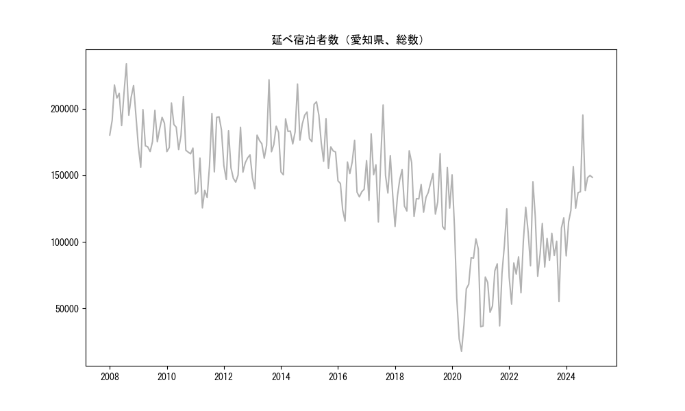
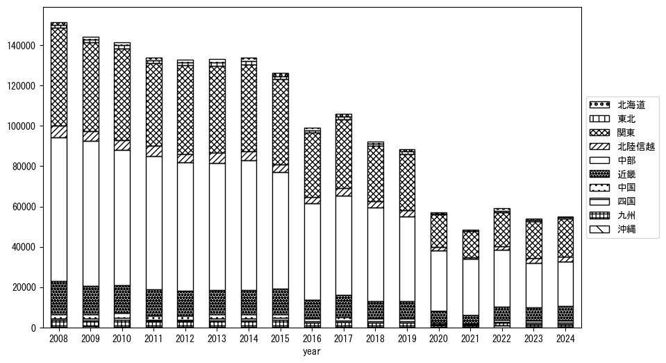
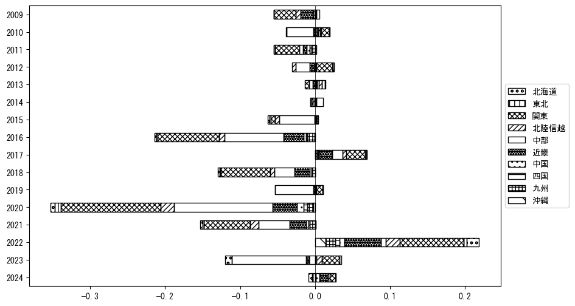
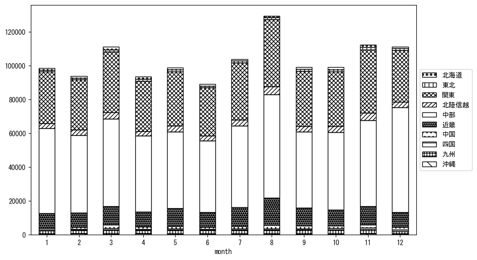
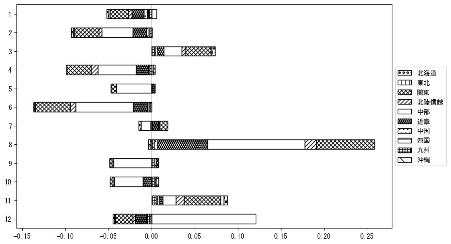

-
トップ
-
愛知県
愛知県
１．延べ宿泊者（総数）の推移
時系列グラフ

図１：愛知県内の従業員数100人以上の宿泊施設での延べ宿泊者数（国外、居住地不詳を含む総数）。
基本統計量
表１：従業員数100人以上の宿泊施設での延べ宿泊者の総数（国外、および居住地不詳を含む）に関する基本統計量。単位は人泊。平均は１か月あたりの平均値を表す。図１に対応。
| 2008年 |
204,844 |
15,293 |
180,253 (1月) |
233,871 (8月) |
| 2009年 |
179,654 |
13,451 |
156,083 (2月) |
199,401 (3月) |
| 2010年 |
179,061 |
14,934 |
166,144 (11月) |
209,218 (8月) |
| 2011年 |
159,368 |
26,413 |
125,503 (4月) |
196,421 (8月) |
| 2012年 |
159,392 |
13,486 |
144,850 (6月) |
186,134 (8月) |
| 2013年 |
173,775 |
20,358 |
139,910 (2月) |
221,808 (8月) |
| 2014年 |
182,858 |
18,763 |
150,385 (2月) |
218,593 (8月) |
| 2015年 |
178,901 |
16,454 |
155,164 (9月) |
205,273 (4月) |
| 2016年 |
143,791 |
16,590 |
115,606 (4月) |
176,345 (8月) |
| 2017年 |
154,005 |
23,485 |
114,990 (6月) |
202,884 (8月) |
| 2018年 |
137,679 |
17,139 |
111,573 (1月) |
168,439 (7月) |
| 2019年 |
133,955 |
17,721 |
109,143 (10月) |
166,299 (8月) |
| 2020年 |
75,545 |
37,954 |
17,711 (5月) |
150,417 (1月) |
| 2021年 |
67,718 |
27,324 |
36,257 (1月) |
124,826 (12月) |
| 2022年 |
93,093 |
27,313 |
53,248 (2月) |
145,232 (11月) |
| 2023年 |
94,090 |
18,271 |
55,144 (10月) |
118,051 (12月) |
２．宿泊者数の重心（年平均の推移）
図２：愛知県内の従業員数100人以上の宿泊施設での延べ宿泊者数（国外、居住地不詳を除く）の重心（年平均の推移）。
全画面表示
重心の前年平均からの移動距離と方位、および緯度・経度
表２：重心の前年平均からの移動距離と方位、および緯度・経度。図２に対応。
| 2008年 |
— |
— |
35.3824 |
137.5461 |
| 2009年 |
西南西 |
4.0km |
35.3662 |
137.5069 |
| 2010年 |
東北東 |
2.5km |
35.3716 |
137.5334 |
| 2011年 |
南 |
0.2km |
35.3697 |
137.5333 |
| 2012年 |
東北東 |
7.8km |
35.4076 |
137.6056 |
| 2013年 |
北西 |
2.8km |
35.4249 |
137.5826 |
| 2014年 |
南西 |
1.2km |
35.4169 |
137.5742 |
| 2015年 |
南南西 |
3.3km |
35.3906 |
137.5583 |
| 2016年 |
北北東 |
2.8km |
35.4136 |
137.5714 |
| 2017年 |
西南西 |
2.1km |
35.4073 |
137.5495 |
| 2018年 |
西南西 |
6.3km |
35.3825 |
137.4875 |
| 2019年 |
東北東 |
6.0km |
35.4078 |
137.5453 |
| 2020年 |
南西 |
11.3km |
35.3450 |
137.4478 |
| 2021年 |
南西 |
3.1km |
35.3215 |
137.4286 |
| 2022年 |
西 |
8.4km |
35.3273 |
137.3368 |
| 2023年 |
東北東 |
16.1km |
35.3750 |
137.5042 |
運輸局別延べ宿泊者数
時系列（年平均）

図３：愛知県内の従業員数100人以上の宿泊施設での１か月あたり平均延べ宿泊者数（国外、居住地不詳を除く）の運輸局別内訳。
寄与度（前年からの変化率に対する）

図４：愛知県内の従業員数100人以上の宿泊施設での運輸局別延べ宿泊者数（国外、居住地不詳を除く）から求めた寄与度。
３．宿泊者数の重心（月別）
図５：愛知県内の従業員数100人以上の宿泊施設での延べ宿泊者数（国外、居住地不詳を除く）の重心（月別）。観測期間は2008年1月から2023年12月まで。
全画面表示
全期間（2008年1月～2023年12月）の平均と月別平均の比較
表３：全期間の平均から月別平均までの移動距離と方位、および緯度・経度。図５に対応。
| 全期間 |
— |
— |
35.3819 |
137.5194 |
| 1月 |
東南東 |
3.2km |
35.3703 |
137.5521 |
| 2月 |
南東 |
1.9km |
35.3683 |
137.5312 |
| 3月 |
北北東 |
5.0km |
35.4224 |
137.5428 |
| 4月 |
西南西 |
2.4km |
35.3768 |
137.4941 |
| 5月 |
北北東 |
0.7km |
35.3876 |
137.5221 |
| 6月 |
東北東 |
0.9km |
35.3852 |
137.5286 |
| 7月 |
南南東 |
1.6km |
35.3686 |
137.5258 |
| 8月 |
南西 |
6.0km |
35.3395 |
137.4788 |
| 9月 |
北西 |
1.5km |
35.3922 |
137.5086 |
| 10月 |
北北東 |
2.4km |
35.4019 |
137.5287 |
| 11月 |
北東 |
4.8km |
35.4152 |
137.5532 |
| 12月 |
西南西 |
5.6km |
35.3545 |
137.4673 |
運輸局別延べ宿泊者数
月別平均（2008年1月～2023年12月）

図６：愛知県内の従業員数100人以上の宿泊施設での延べ宿泊者数（国外、居住地不詳を除く）の運輸局別内訳（月別）。
寄与度（全期間の平均から月別平均への変化率に対する）

図７：愛知県内の従業員数100人以上の宿泊施設での運輸局別延べ宿泊者数（国外、居住地不詳を除く）から求めた寄与度（月別）。
４．データのダウンロード
出典：観光庁「宿泊旅行統計調査」に収録された「施設所在地、居住地別延べ宿泊者数（従業員数100人以上の施設）」
国土地理院「白地図（地理院タイル）」（図２と図５）